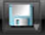

Olympus LEXT OLS4000 Confocal uScope - Quick Start
Demis D. John –– 2018-07-19
Do not use the LEXT unless trained first!
You MUST be officially trained on this tool before you are allowed to use it!
These instructions are a quick-reference for users who have already received the full training.
Quick-Start General Procedure
In order to acquire a profile height measurement, you must do the following:
1) Get the sample surface in focus with the regular “color” optical microscope & lock the focus knob
2) Switch to “laser” mode & readjust the focus
3) Specify the bottom and top range for the focus motor to scan over & acquire the scan data (in Fine/Manual mode)
4) In the “Measure” tab, Specify a region on the image of which to take a profile
5) Move the cursors to the desired step-height measurement positions
Quick-Start Detailed Procedure
Initial Setup
Make sure microscope is raised and stage is away from the objectives in the “Sample Exchange” position. Make sure software is started (should show a Login screen). If this is not the case, do the following:
- Open the software “OLS4000”.
- Ensure no sample is inserted, and microscope objectives are lifted away from the stage – use the coarse focus knob to lift the objectives to a safe height & Lock it, if needed. Then press “OK” on the warning & wait for motor initialization.
- At the login screen, click “OK” to login as Guest.
Load & focus on sample
- Place your sample near the center of the stage.
- Make sure 5x objective is selected and objectives will not hit stage if motors move down. If unsure, click “Cancel” on the “Move to Z reference position” dialogue, and lift the objectives using the manual focus knob.
- Click the “Scan Position” button to move the stage to center
- System should already be imaging live in Color mode. If not, click the “Color” imaging button , and ensure the “Live” window-tab has a halo around it by clicking on it, like so:
- Focus on the sample surface by using the black manual focus knob first, unlocking/re-locking if needed. This prevents the electronic focus motor from hitting it’s limit during imaging.
- Make sure to engage the focus “Lock” ring (finger-tight only), otherwise the focus will drift.
- Fine-Focus (electronic) by using the Mouse-Wheel (Right-click the live image to set wheel to Coarse focus), or by using the “Focus” up/down arrows on the right of the image.
- Use the joystick to drive to feature of interest.
- Make sure sample's TOP surface is in focus before Stepping up in objectives/magnification, to prevent crashing.
- The higher the magnification, the better the height resolution.
- Click the Laser imaging mode button
- Readjust electronic focus until the sample surface lights up.
- May need to adjust laser Brightness (vertical tab on image pane), for max brightness but not saturating can use “Saturation Highlighting” to show this
<<pic of saturation highlighting>>
- May need to adjust laser Brightness (vertical tab on image pane), for max brightness but not saturating can use “Saturation Highlighting” to show this
Acquisition Settings / Scan Range
- Set the Acquisition Settings to [Fine▽] & [√] Manual, like so:

- [√] Color mode will scan the in color mode and then in laser mode, and superimpose the true-color image onto the 3D image.
- Expand the [+] on the right of the image and enable Saturation Highlighting
- Focus ⇓on the lowest surface of your sample. Go a few mouse-wheel clicks below that focus point until lowest surface has reduced in brightness and click the [Bottom] button to save this Z height as the lower point of the scan range.
- Focus ⇑on the highest surface, and go a few clicks above that until brightness decreases, and click the [Top] scan range button.
- If you see any regions of the sample surface reach saturation anywhere in the scan range, lower the image brightness using the Brightness arrows on the right of the imaging panel.
<<pic of brightness buttons>>. - Higher brightness reduces noise, but saturation reduces accuracy of surface height detection.
- If you see any regions of the sample surface reach saturation anywhere in the scan range, lower the image brightness using the Brightness arrows on the right of the imaging panel.
- Click [Acquisition] to perform the scan
- 200 height steps takes about ~30sec. Watch out for excessively high scan steps that could take a long time.
Measure Height Profile
- Switch to the [Measure] tab at the top

- Use Profile > 2-point mode
- Click two points on your image to extract profile
- Optional: level the surface (done automatically, but sometimes can be better)
- [Image Correction] > (•) 3-Point > Click 3 points on image on same surface> [Execute]
- Place cursors on height profile & observe “Height” value in corner.
- Optional: Click ▽under Profile buttons to average around the cursors
- Optional: Save  as Screenshot or LEXT file (for later analysis)
- Optional: Click ▽under Profile buttons to average around the cursors